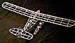
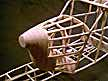

|

This is my 25" Aeronca K seaplane from Comet plans. I haven't checked the weight yet, but would estimate 10 grams so far. Still need to make lots of struts and some engine cylinders, but that stuff will wait until test flying is over with. Floats are made to knock off on landing, l.g. struts are bent back and plug into aluminum tubing. The little black strips on the front formers are carbon fiber. Absolutely necessary in my opinion, as there is very little room for rubber with the high thrustline.
Cheers,
|
 |
(click any image for a larger view)
Copyright 1998, Thayer Syme. All rights reserved